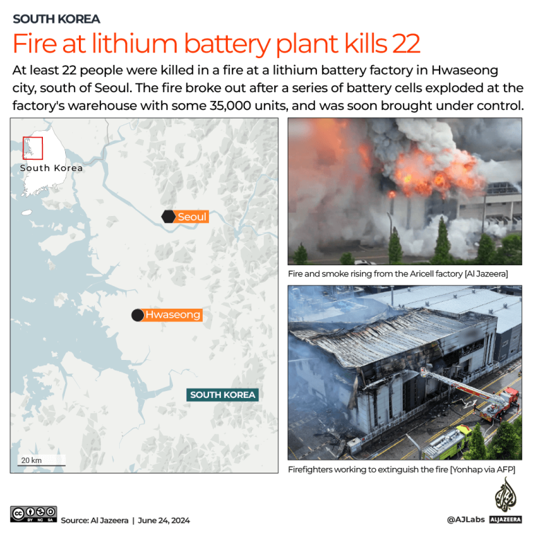
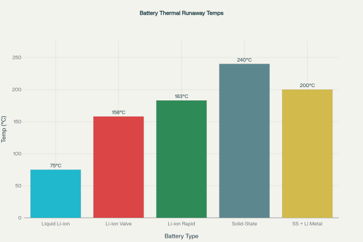
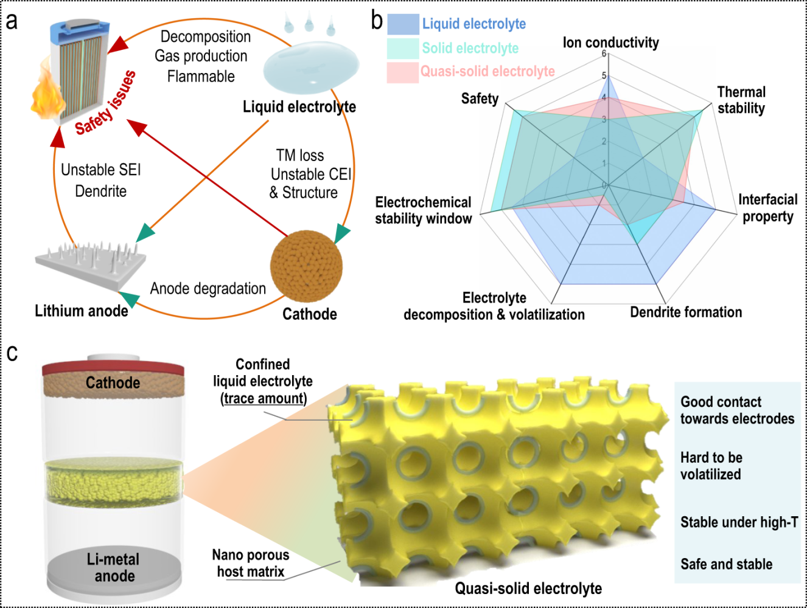
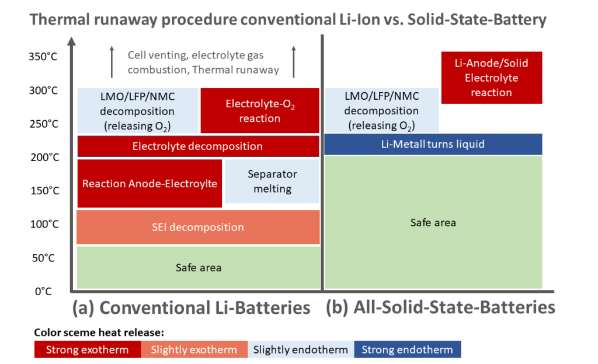
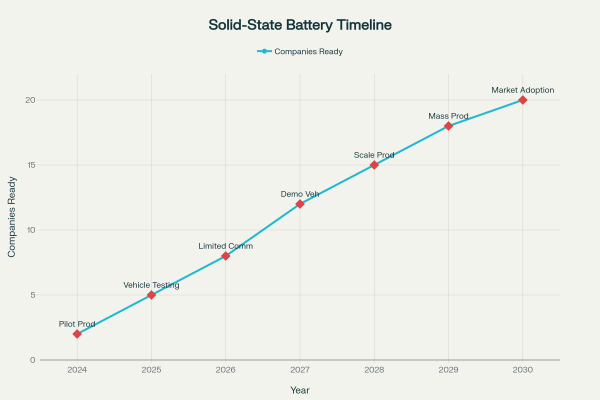
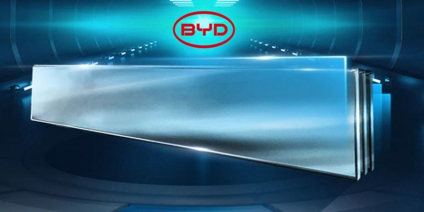
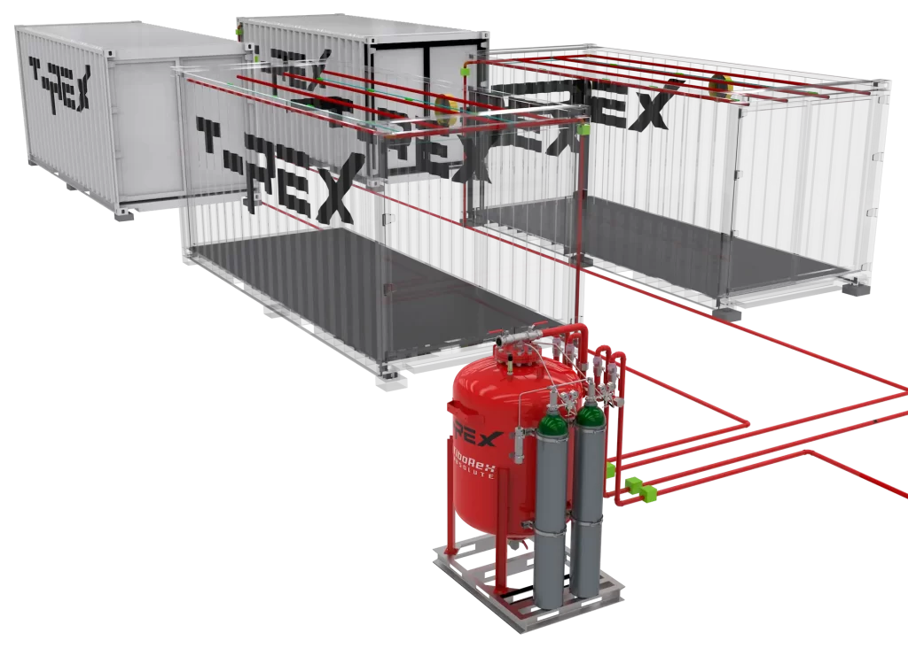
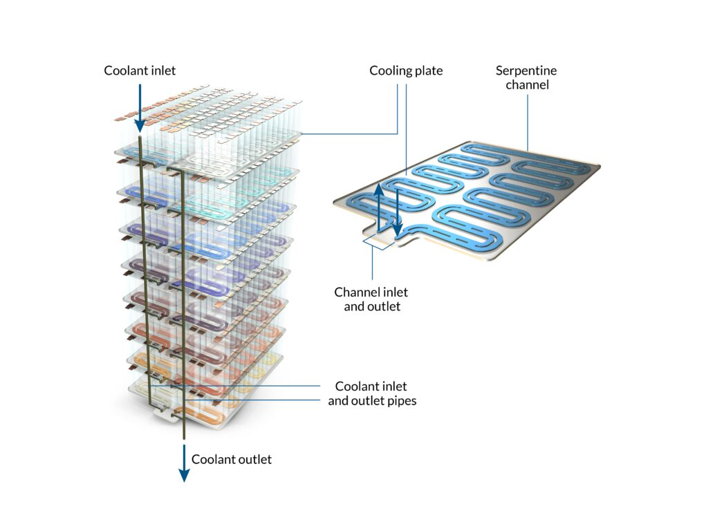
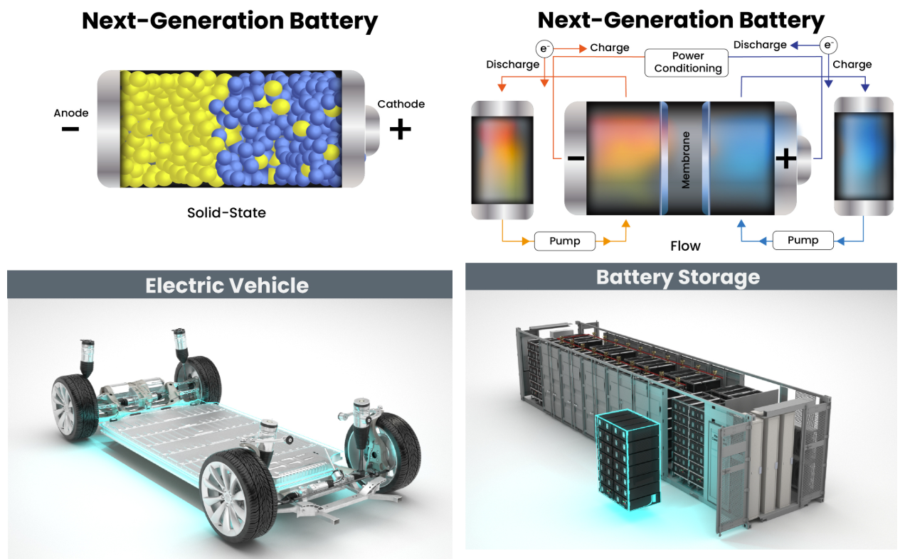

The integration of solid-state battery technology into Battery Energy Storage Systems (BESS) represents a potentially transformative shift toward addressing two of the most critical challenges in energy storage: safety concerns and thermal runaway events. As the global BESS market continues its rapid expansion—projected to reach $63.75 billion by 2033—the industry faces mounting pressure to develop safer, more reliable storage solutions that can support the growing renewable energy infrastructure while minimizing fire and explosion risks.

The Current Safety Crisis in BESS
Traditional lithium-ion battery energy storage systems face inherent safety challenges that have resulted in numerous incidents worldwide. South Korea experienced 23 major battery fires over a 2-year period between 2020 and 2022, with the most recent explosion resulting in 22 worker deaths and 8 injuries. The primary culprit behind these catastrophic events is thermal runaway—a phenomenon where accelerating heat release inside a cell manifest as an exponential, uncontrollable increase in temperature.

Current lithium-ion batteries carry all the components required for combustion or explosion once thermal runaway occurs—fuel (liquid electrolyte), oxygen (released from metal oxide cathodes), and an ignition source (heat from thermal runaway reactions). The liquid electrolytes used in conventional systems are inherently flammable and can lead to thermal runaway if the battery is damaged or overheated. Research shows that conventional liquid electrolyte systems begin experiencing thermal issues at relatively low temperatures, with rapid self-heating typically starting around 70°C.

Solid-State Technology: A Safety Revolution
Solid-state batteries address many of the fundamental safety concerns plaguing traditional BESS installations. The key innovation lies in replacing flammable liquid electrolytes with solid electrolytes, which are inherently non-flammable. This substitution significantly reduces the risk of fires and explosions associated with traditional lithium-ion batteries.
Enhanced Thermal Stability
The thermal performance advantages of solid-state batteries are substantial. Solid electrolytes have superior thermal stability compared to liquid electrolytes, with higher threshold temperatures for material decomposition and subsequent thermal runaway (~200°C) compared to traditional liquid electrolyte-based batteries (~70°C). Research indicates that solid-state batteries can operate effectively at higher temperatures compared to conventional lithium-ion batteries, reducing the risk of thermal runaway during high-temperature conditions.
The thermal decomposition characteristics vary significantly between electrolyte types. Solid polymer electrolytes typically have thermal decomposition temperatures below 300°C, while solid inorganic electrolytes can reach decomposition temperatures exceeding 700°C. However, when solid electrolytes contact lithium metal electrodes, thermal runaway temperature is often much lower than the isolated electrolyte decomposition temperature, typically below 300°C.

Elimination of Liquid-Related Hazards
Since solid-state batteries do not contain liquid electrolytes, they are not susceptible to leakage, which can damage devices and pose environmental hazards. This characteristic makes them particularly attractive for BESS applications where electrolyte leakage caused by mechanical stress or thermal expansion can trigger harmful chemical reactions outside the battery compartment.
Current Challenges and Limitations
Despite their promise, solid-state batteries face several technical hurdles that currently limit their widespread adoption in BESS applications.
Manufacturing and Scalability Issues
Producing solid-state batteries involves complex, difficult-to-scale fabrication processes and costly solid electrolyte materials. The manufacturing challenges include:
- Engineering teams may lack consistent analysis of solid electrolyte behavior, particularly regarding temperature fluctuations and mechanical stress
- Achieving consistently stable interfaces between solid electrolyte and electrodes remains a work in progress
- The brittleness of many solid electrolytes, particularly ceramics, complicates handling during manufacturing

Persistent Safety Concerns
While solid-state designs significantly improve safety profiles, some risks remain. Although solid-state designs significantly reduce the risk of dendrite formation compared to conventional Li-ion batteries, the issue persists with lithium-metal anodes. Additionally, thermodynamic models predict that the total heat release due to internal shorting of an SSB could be significantly higher than their liquid electrolyte counterparts.
Research has revealed two distinct thermal runaway mechanisms in sulfide-based solid-state batteries: gas-solid and solid-solid reactions, indicating that thermal management remains crucial even with solid-state technology.
Commercialization Timeline and Market Readiness

The transition to solid-state BESS is approaching commercial viability, with mass production timelines concentrated in the latter half of the 2020s, with commercialization potentially commencing from 2026. Major manufacturers have announced specific deployment schedules:
BYD plans to start demonstration in 2027 and achieve large-scale production around 2030. The company has started feasibility studies into industrialization covering key material technology, cell system development, and production line construction. Their roadmap includes:
- 2027: Launch batch demonstration installation with first models being high-end electric coupes
- 2030: Promote use in 40,000 vehicles and achieve cost parity with liquid batteries

Other manufacturers show similar timelines: Samsung SDI plans to achieve mass production by 2027, while LG Energy Solution expects solid-state battery mass production by 2030.
BESS-Specific Applications and Benefits
Enhanced Fire Safety Systems
Current BESS installations rely heavily on sophisticated fire detection and suppression systems. Traditional methods like water sprinklers are not always effective for lithium-ion fires, which do not rely on external oxygen and can re-ignite. Solid-state technology could significantly reduce the complexity and cost of these safety systems.

Improved Thermal Management
Solid electrolytes can better withstand high currents but are less efficient at dissipating heat than liquid electrolytes. However, their lower thermal conductivity complicates heat management, especially under high-power conditions. This characteristic requires new requirements for thermal management systems, increasing component complexity but potentially improving overall safety.

Regulatory and Standards Evolution
The safety advantages of solid-state technology align with evolving BESS standards. UL9540A testing evaluates thermal runaway fire propagation from cell to system level, and solid-state batteries' improved thermal characteristics could simplify compliance with these stringent safety requirements.
Future Outlook: Addressing the Safety Challenge
The integration of solid-state technology into BESS represents a promising pathway toward solving chronic safety and thermal runaway challenges. Emerging technologies such as solid-state and non-lithium batteries are paving the way for safer and more sustainable alternatives, including non-flammable and non-toxic solutions.
However, system-level safety assessments are evolving in parallel with new solid-state products, and insights from real-world use are still years away. The onus is on stakeholders to conduct rigorous, detailed assessments of both solid-state batteries and their integrated systems to fully realize their safety potential.

The path forward requires addressing remaining technical challenges while maintaining the safety advantages that make solid-state technology attractive. As the global shift toward electrification intensifies, BESS will see increasing demand for applications such as Vehicle-to-Grid systems and large-scale electric vehicle battery storage solutions, making the safety improvements offered by solid-state technology increasingly critical.
While solid-state batteries show tremendous promise for solving BESS safety challenges, their success will ultimately depend on overcoming manufacturing hurdles, ensuring consistent performance, and developing appropriate system-level integration strategies that maximize their inherent safety advantages while addressing their current limitations.